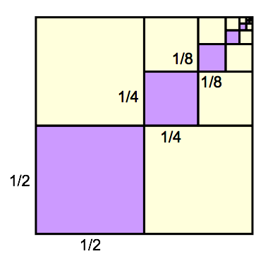
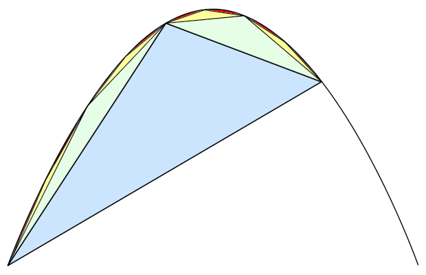
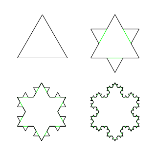
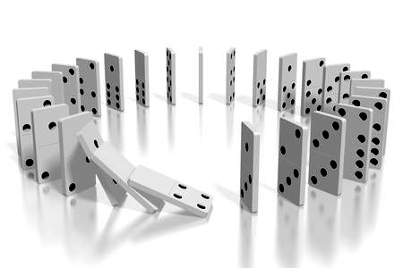

A mathematical sequence is an ordered list of objects, often numbers. Sometimes the numbers in a sequence are defined in terms of a previous number in the list.
Differentiate between different types of sequences
In mathematics, a sequence is an ordered list of objects. Like a set, it contains members (also called elements or terms). The number of ordered elements (possibly infinite) is called the length of the sequence. Unlike a set, order matters, and a particular term can appear multiple times at different positions in the sequence.
For example, $(M, A, R, Y)$ is a sequence of letters that differs from $(A, R, M, Y)$ , as the ordering matters, and $(1, 1, 2, 3, 5, 8)$ , which contains the number 1 at two different positions, is a valid sequence. Sequences can be finite, as in this example, or infinite, such as the sequence of all even positive integers $(2, 4, 6, \cdots )$ . Finite sequences are sometimes known as strings or words and infinite sequences as streams.
A more formal definition of a finite sequence with terms in a set $S$ is a function from $\left \{ 1, 2, \cdots, n \right \}$ to $S$ for some $n > 0$ . An infinite sequence in $S$ is a function from $\left \{ 1, 2, \cdots \right \}$ to $S$ . For example, the sequence of prime numbers $(2,3,5,7,11, \cdots )$ is the function
$1\rightarrow 2, 2\rightarrow 3, 3\rightarrow 5, 4\rightarrow 7, 5\rightarrow 11, \cdots$
A sequence of a finite length n is also called an $n$ -tuple. Finite sequences include the empty sequence $( \quad )$ that has no elements.
Many of the sequences you will encounter in a mathematics course are produced by a formula, where some operation(s) is performed on the previous member of the sequence $a_{n-1}$ to give the next member of the sequence $a_n$ . These are called recursive sequences.
An arithmetic (or linear) sequence is a sequence of numbers in which each new term is calculated by adding a constant value to the previous term. An example is $(10,13,16,19,22,25)$ . In this example, the first term (which we will call $a_1$ ) is $10$ , and the common difference ($d$ )—that is, the difference between any two adjacent numbers—is $3$ . The recursive definition is therefore
Another example is $(25,22,19,16,13,10)$ . In this example $a_1 = 25$ , and $d=-3$ . The recursive definition is therefore
In both of these examples, $n$ (the number of terms) is $6$ .
A geometric sequence is a list in which each number is generated by multiplying a constant by the previous number. An example is $(2,6,18,54,162)$ . In this example, $a_1=2$ , and the common ratio ($r$ )—that is, the ratio between any two adjacent numbers—is 3. Therefore the recursive definition is
Another example is $(162,54,18,6,2)$ . In this example $a_1=162$ , and $\displaystyle{r=\frac{1}{3}}$ . Therefore the recursive formula is
$\displaystyle{a_n=\frac13\cdot a_{n-1}, a_1=162}$
In both examples $n=5$ .
An explicit definition of an arithmetic sequence is one in which the $n$ th term is defined without making reference to the previous term. This is more useful, because it means you can find (for instance) the 20th term without finding all of the other terms in between.
To find the explicit definition of an arithmetic sequence, you begin writing out the terms. Assume our sequence is $t_1, t_2, \dots $ . The first term is always $t_1$ . The second term goes up by $d$ , and so it is $t_1+d$ . The third term goes up by $d$ again, and so it is $(t_1+d)+d,$ or in other words, $t_1+2d$ . So we see that:
and so on. From this you can see the generalization that:
which is the explicit definition we were looking for.
The explicit definition of a geometric sequence is obtained in a similar way. The first term is $t_1$ ; the second term is $r$ times that, or $t_1r$ ; the third term is $r$ times that, or $t_1r^2$ ; and so on. So the general rule is:
Given terms in a sequence, it is often possible to find a formula for the general term of the sequence, if the formula is a polynomial.
Practice finding a formula for the general term of a sequence
Given several terms in a sequence, it is sometimes possible to find a formula for the general term of the sequence. Such a formula will produce the $n$ th term when a value for the integer $n$ is put into the formula.
If a sequence is generated by a polynomial, this fact can be detected by noticing whether the computed differences eventually become constant.
Consider the sequence:
$5, 7, 9, 11, 13, \dots$
The difference between $7$ and $5$ is $2$ . The difference between $7$ and $9$ is also $2$ . In fact, the difference between each pair of terms is $2$ . Since this difference is constant, and this is the first set of differences, the sequence is given by a first-degree (linear) polynomial.
Suppose the formula for the sequence is given by $an+b$ for some constants $a$ and $b$ . Then the sequence looks like:
The difference between each term and the term after it is $a$ . In our example, $a=2$ . It is possible to solve for $b$ using one of the terms in the sequence. Using the first number in the sequence and the first term:
So, the $n$ th term of the sequence is given by $2n+3$ .
Suppose the $n$ th term of a sequence was given by $an^2+bn+c$ . Then the sequence would look like:
This sequence was created by plugging in $1$ for $n$ , $2$ for $n$ , $3$ for $n$ , etc.
If we start at the second term, and subtract the previous term from each term in the sequence, we can get a new sequence made up of the differences between terms. The first sequence of differences would be:
Now, we take the differences between terms in the new sequence. The second sequence of differences is:
The computed differences have converged to a constant after the second sequence of differences. This means that it was a second-order (quadratic) sequence. Working backward from this, we could find the general term for any quadratic sequence.
Consider the sequence:
The difference between $-7$ and $4$ is $-11$ , and the difference between $-26$ and $-7$ is $-19$ . Finding all these differences, we get a new sequence:
This list is still not constant. However, finding the difference between terms once more, we get:
This fact tells us that there is a polynomial formula describing our sequence. Since we had to do differences twice, it is a second-degree (quadratic) polynomial.
We can find the formula by realizing that the constant term is $-8$ , and that it can also be expressed by $2a$ . Therefore $a=-4$ .
Next we note that the first item in our first list of differences is $-11$ , but that generically it is supposed to be $3a+b$ , so we must have $3(-4)+b=-11$ , and $b=1$ .
Finally, note that the first term in the sequence is $4$ , and can also be expressed by
So, $c=7$ , and the formula that generates the sequence is $-4a^2+b+7c$ .
This method of finding differences can be extended to find the general term of a polynomial sequence of any order. For higher orders, it will take more rounds of taking differences for the differences to become constant, and more back-substitution will be necessary in order to solve for the general term.
Some sequences are generated by a general term which is not a polynomial. For example, the geometric sequence $2, 4, 8, 16,\dots$ is given by the general term $2^n$ . Because this term is not a polynomial, taking differences will never result in a constant difference.
General terms of non-polynomial sequences can be found by observation, as above, or by other means which are beyond our scope for now. Given any general term, the sequence can be generated by plugging in successive values of $n$ .
Sigma notation, denoted by the uppercase Greek letter sigma $\left ( \Sigma \right ),$ is used to represent summations—a series of numbers to be added together.
Calculate the sum of a series represented in sigma notation
Summation is the operation of adding a sequence of numbers, resulting in a sum or total. If numbers are added sequentially from left to right, any intermediate result is a partial sum. The numbers to be summed (called addends, or sometimes summands) may be integers, rational numbers, real numbers, or complex numbers. For finite sequences of such elements, summation always produces a well-defined sum.
A series is a list of numbers—like a sequence—but instead of just listing them, the plus signs indicate that they should be added up.
For example, $4+9+3+2+17$ is a series. This particular series adds up to $35$ . Another series is $2+4+8+16+32+64$ . This series sums to $126$ .
One way to compactly represent a series is with sigma notation, or summation notation, which looks like this:
The main symbol seen is the uppercase Greek letter sigma. It indicates a series. To "unpack" this notation, $n=3$ represents the number at which to start counting ($3$ ), and the $7$ represents the point at which to stop. For each term, plug that value of $n$ into the given formula ($n^2$ ). This particular formula, which we can read as "the sum as $n$ goes from $3$ to $7$ of $n^2$ ," means:
More generally, sigma notation can be defined as:
In this formula, i represents the index of summation, $x_i$ is an indexed variable representing each successive term in the series, $m$ is the lower bound of summation, and $n$ is the upper bound of summation. The "$i = m$ " under the summation symbol means that the index $i$ starts out equal to $m$ . The index, $i$ , is incremented by $1$ for each successive term, stopping when $i=n$.
Another example is:
$\displaystyle{ \begin{align} \sum_{i=3}^6 (i^2+1) &= (3^2+1)+(4^2+1)+(5^2+1)+(6^2+1) \\ &=10+17+26+37 \\ &=90 \end{align} }$
This series sums to $90.$ So we could write:
Informal writing sometimes omits the definition of the index and bounds of summation when these are clear from context. For example:
A recursive definition of a function defines its values for some inputs in terms of the values of the same function for other inputs.
Use a recursive formula to find specific terms of a sequence
In mathematical logic and computer science, a recursive definition, or inductive definition, is used to define an object in terms of itself. A recursive definition of a function defines values of the function for some inputs in terms of the values of the same function for other inputs.
For example, the factorial function $n!$ is defined by the rules:
This definition is valid because, for all $n$ , the recursion eventually reaches the base case of $0$ .
For example, we can compute $5!$ by realizing that $5!=5\cdot 4!$ , and that $4!=4\cdot 3!$ , and that $3!=3\cdot 2!$ , and that $2!=2\cdot 1!,$ and that:
$\displaystyle{ \begin{align} 1! &=1\cdot 0! \\ &= 1\cdot 1 \\ &=1 \end{align} }$
Putting this all together we get:
When discussing arithmetic sequences, you may have noticed that the difference between two consecutive terms in the sequence could be written in a general way:
The above equation is an example of a recursive equation since the $n$ th term can only be calculated by considering the previous term in the sequence. Compare this with the equation:
In this equation, one can directly calculate the nth-term of the arithmetic sequence without knowing the previous terms. Depending on how the sequence is being used, either the recursive definition or the non-recursive one might be more useful.
A recursive geometric sequence follows the formula:
$a_n=r\cdot a_{n-1}$
An applied example of a geometric sequence involves the spread of the flu virus. Suppose each infected person will infect two more people, such that the terms follow a geometric sequence.
Each person infects two more people with the flu virus, making the number of recently-infected people the nth term in a geometric sequence.
Using this equation, the recursive equation for this geometric sequence is:
Recursive equations are extremely powerful. One can work out every term in the series just by knowing previous terms. As can be seen from the examples above, working out and using the previous term $a_{n-1}$ can be a much simpler computation than working out $a_{n}$ from scratch using a general formula. This means that using a recursive formula when using a computer to manipulate a sequence might mean that the calculation will be finished quickly.
An arithmetic sequence is a sequence of numbers in which the difference between the consecutive terms is constant.
Calculate the nth term of an arithmetic sequence and describe the properties of arithmetic sequences
An arithmetic progression, or arithmetic sequence, is a sequence of numbers such that the difference between the consecutive terms is constant. For instance, the sequence $5, 7, 9, 11, 13, \cdots$ is an arithmetic sequence with common difference of $2$ .
The behavior of the arithmetic sequence depends on the common difference $d$ .
If the common difference, $d$ , is:
Note that the first term in the sequence can be thought of as $a_1+0\cdot d,$ the second term can be thought of as $a_1+1\cdot d,$ the third term can be thought of as $a_1+2\cdot d, $ and so the following equation gives $a_n$ :
Of course, one can always write out each term until getting the term sought—but if the 50th term is needed, doing so can be cumbersome.
An arithmetic sequence which is finite has a specific formula for its sum.
Calculate the sum of an arithmetic sequence up to a certain number of terms
An arithmetic progression or arithmetic sequence is an ordered list of numbers such that the difference between the consecutive terms is constant. For instance, the sequence $5, 7, 9, 11, 13, \cdots$ is an arithmetic progression with common difference of $2$ .
The sum of the members of a finite arithmetic sequence is called an arithmetic series.
We can come up with a formula for the sum of a finite arithmetic formula by looking at the sum in two different ways. First we think of it as the sum of terms that are written in terms of $a_1$ , so that the second term is $a_1+d$ , the third is $a_1+2d$ , and so on. Then our sum looks like:
Next, we think of each term as being written in terms of the last term, $a_n$ . Then the last term is $a_n$ , the term before the last is $a_n-d$ , the term before that is $a_n-2d$ , and so on. The sum is therefore:
Adding both sides of the two previous equations, all terms involving $d$ cancel and we obtain:
Dividing both sides by $2$ produces a common form of the equation:
This can be thought of as $n$ times the average of the first and last terms. An alternate form results from reinserting the substitution $a_n = a_1 + \left(n-1\right)d$ :
For example, consider the arithmetic progression $3,8,13,18,23, \cdots$ and suppose you want to know the sum up to the $50$ th term. Note that you will need:
From the question, we know that $n=50$ . We can see that the first term is $a_1 = 3$ . The difference between the terms is $d = 5$ . So the equation above gives:
An infinite arithmetic series is exactly what it sounds like: an infinite series whose terms are in an arithmetic sequence. Examples are $1 + 1 + 1 + 1 + \cdots$ and $1+2+3+4+ \cdots$ . The general form for an infinite arithmetic series is:
If $a_1=d=0$ , then the sum of the series is $0$ . If either $a_1$ or $d$ is non-zero, then the infinite series has no sum.
Even if one is dealing with an infinite sequence, the sum of that sequence can still be found up to any $n$ th term with the same equation used in a finite arithmetic sequence.
A geometric sequence is an ordered list of numbers in which each term after the first is found by multiplying the previous one by a constant called $r$ , the common ratio.
Calculate the
A geometric progression, also known as a geometric sequence, is an ordered list of numbers in which each term after the first is found by multiplying the previous one by a fixed non-zero number called the common ratio $r$ . For example, the sequence $2, 6, 18, 54, \cdots$ is a geometric progression with common ratio $3$ . Similarly $10,5,2.5,1.25,\cdots$ is a geometric sequence with common ratio $\displaystyle{\frac{1}{2}}$ .
Thus, the general form of a geometric sequence is:
The $n$ th term of a geometric sequence with initial value $a$ and common ratio $r$ is given by
Such a geometric sequence also follows the recursive relation:
$a_n=ra_{n-1}$
for every integer $n\ge 1.$
Generally, to check whether a given sequence is geometric, one simply checks whether successive entries in the sequence all have the same ratio. The common ratio of a geometric series may be negative, resulting in an alternating sequence. An alternating sequence will have numbers that switch back and forth between positive and negative signs. For instance: $1,-3,9,-27,81,-243, \cdots$ is a geometric sequence with common ratio $-3$ .
The behavior of a geometric sequence depends on the value of the common ratio. If the common ratio is:
Geometric sequences (with common ratio not equal to $-1$ , $1$ or $0$ ) show exponential growth or exponential decay, as opposed to the linear growth (or decline) of an arithmetic progression such as $4, 15, 26, 37, 48, \cdots$ (with common difference $11$ ). This result was taken by T.R. Malthus as the mathematical foundation of his Principle of Population. Note that the two kinds of progression are related: exponentiating each term of an arithmetic progression yields a geometric progression, while taking the logarithm of each term in a geometric progression with a positive common ratio yields an arithmetic progression.
An interesting result of the definition of a geometric progression is that for any value of the common ratio, any three consecutive terms $a$ , $b$ , and $c$ will satisfy the following equation:
By utilizing the common ratio and the first term of a geometric sequence, we can sum its terms.
Calculate the sum of the first
Geometric series are examples of infinite series with finite sums, although not all of them have this property. Historically, geometric series played an important role in the early development of calculus, and they continue to be central in the study of the convergence of series. Geometric series are used throughout mathematics, and they have important applications in physics, engineering, biology, economics, computer science, queueing theory, and finance.
The terms of a geometric series form a geometric progression, meaning that the ratio of successive terms in the series is constant. For example, the following series:
is geometric, because each successive term can be obtained by multiplying the previous term by $\displaystyle{\frac{1}{2}}$ .
The general form of an infinite geometric series is:
It is possible to visualize this concept with a diagram:
Each of the purple squares is obtained by multiplying the area of the next larger square by $\displaystyle{\frac{1}{4}}$ . The area of the first square is $\displaystyle{\frac{1}{2} \cdot \frac{1}{2} = \frac{1}{4}}$ , and the area of the second square is $\displaystyle{\frac{1}{4} \cdot \frac{1}{4} = \frac{1}{16}}$ .
The following are several geometric series with different common ratios. The behavior of the terms depends on the common ratio $r$ :
The value of $r$ provides information about the nature of the series:
We can use a formula to find the sum of a finite number of terms in a sequence. For $r\neq 1$ , the sum of the first $n$ terms of a geometric series is:
where $a$ is the first term of the series, and $r$ is the common ratio.
Therefore, by utilizing the common ratio and the first term of the sequence, we can sum the first $n$ terms.
Find the sum of the first five terms of the geometric sequence $\left(6, 18, 54, 162, \cdots \right)$ .
In this case, $a=6$ and $n=5$ . Also, note that $r = 3$ , because each term is multiplied by a factor of $3$ to find the subsequent term.
Substituting these values into the sum formula, we have:
Geometric series are one of the simplest examples of infinite series with finite sums.
Calculate the sum of an infinite geometric series and recognize when a geometric series will converge
A geometric series is an infinite series whose terms are in a geometric progression, or whose successive terms have a common ratio. If the terms of a geometric series approach zero, the sum of its terms will be finite. As the numbers near zero, they become insignificantly small, allowing a sum to be calculated despite the series being infinite.
A geometric series with a finite sum is said to converge. A series converges if and only if the absolute value of the common ratio is less than one:
What follows in an example of an infinite series with a finite sum. We will calculate the sum $s$ of the following series:
This series has common ratio $\displaystyle{\frac{2}{3}}$ . If we multiply through by this common ratio, then the initial term $1$ becomes $\displaystyle{\frac{2}{3}}$ , the $\displaystyle{\frac{2}{3}}$ becomes $\displaystyle{\frac{4}{9}}$ , and so on:
This new series is the same as the original, except that the first term is missing. Subtracting the new series $\displaystyle{\frac{2}{3}s}$ from the original series, $s$ cancels every term in the original but the first:
A similar technique can be used to evaluate any self-similar expression.
A formula can be derived to calculate the sum of the terms of a convergent series. The formula used to sum the first $n$ terms of any geometric series where $r\neq 1$ is:
$\displaystyle s= a\frac { 1-{ r }^{ n } }{ 1-r } $
If a series converges, we want to find the sum of not only a finite number of terms, but all of them. If $\left | r \right | <1$ , then we see that as $n$ becomes very large, $r^n$ becomes very small. We express this by writing that as $n\rightarrow \infty$ (as $n$ approaches infinity), $r^n\rightarrow 0$ .
Applying $r^n\rightarrow 0$ , we can find a new formula for the sum of an infinitely long geometric series:
Therefore, for $|r|<1$ , we can write the infinite sum as:
Find the sum of the infinite geometric series $64+ 32 + 16 + 8 + \cdots$
First, find $r$ , or the constant ratio between each term and the one that precedes it:
Substitute $a=64$ and $\displaystyle r= \frac{1}{2}$ into the formula for the sum of an infinite geometric series:
Geometric series have applications in math and science and are one of the simplest examples of infinite series with finite sums.
Apply geometric sequences and series to different physical and mathematical topics
Geometric series played an important role in the early development of calculus, and continue as a central part of the study of the convergence of series. Geometric series are used throughout mathematics. They have important applications in physics, engineering, biology, economics, computer science, queueing theory, and finance.
Geometric series are one of the simplest examples of infinite series with finite sums, although not all of them have this property.
A repeating decimal can be thought of as a geometric series whose common ratio is a power of $\displaystyle{\frac{1}{10}}$ . For example:
The formula for the sum of a geometric series can be used to convert the decimal to a fraction:
The formula works for any repeating term. Some more examples are:
That is, a repeating decimal with a repeating part of length $n$ is equal to the quotient of the repeating part (as an integer) and $10^n - 1$ .
Archimedes used the sum of a geometric series to compute the area enclosed by a parabola and a straight line. His method was to dissect the area into an infinite number of triangles.
Archimedes' dissection of a parabolic segment into infinitely many triangles.
Archimedes' Theorem states that the total area under the parabola is $\displaystyle{\frac{4}{3}}$ of the area of the blue triangle. He determined that each green triangle has $\displaystyle{\frac{1}{8}}$ the area of the blue triangle, each yellow triangle has $\displaystyle{\frac{1}{8}}$ the area of a green triangle, and so forth. Assuming that the blue triangle has area $1$ , the total area is an infinite series:
The first term represents the area of the blue triangle, the second term the areas of the two green triangles, the third term the areas of the four yellow triangles, and so on. Simplifying the fractions gives:
This is a geometric series with common ratio $\displaystyle{\frac{1}{4}}$ , and the fractional part is equal to $\displaystyle{\frac{1}{3}}$ .
The interior of a Koch snowflake is comprised of an infinite amount of triangles.
The Koch snowflake is a fractal shape with an interior comprised of an infinite amount of triangles. In the study of fractals, geometric series often arise as the perimeter, area, or volume of a self-similar figure. In the case of the Koch snowflake, its area can be described with a geometric series.
Each iteration adds a set of triangles to the outside of the shape.
The area inside the Koch snowflake can be described as the union of an infinite number of equilateral triangles. In the diagram above, the triangles added in the second iteration are exactly $\displaystyle{\frac{1}{3}}$ the size of a side of the largest triangle, and therefore they have exactly $\displaystyle{\frac{1}{9}}$ the area. Similarly, each triangle added in the second iteration has $\displaystyle{\frac{1}{9}}$ the area of the triangles added in the previous iteration, and so forth. Taking the first triangle as a unit of area, the total area of the snowflake is:
The first term of this series represents the area of the first triangle, the second term the total area of the three triangles added in the second iteration, the third term the total area of the twelve triangles added in the third iteration, and so forth. Excluding the initial term $1$ , this series is geometric with constant ratio $\displaystyle{r = \frac{4}{9}}$ . The first term of the geometric series is $\displaystyle{a = 3 \frac{1}{9} = \frac{1}{3}}$ , so the sum is:
Thus the Koch snowflake has $\displaystyle{\frac{8}{5}}$ of the area of the base triangle.
Zeno's Paradoxes are a set of philosophical problems devised by an ancient Greek philosopher to support the doctrine that the truth is contrary to one's senses. Simply stated, one of Zeno's paradoxes says: There is a point, A, that wants to move to another point, B. If A only moves half of the distance between it and point B at a time, it will never get there, because you can continue to divide the remaining space in half forever. Zeno's mistake is in the assumption that the sum of an infinite number of finite steps cannot be finite. We now know that his paradox is not true, as evidenced by the convergence of the geometric series with $\displaystyle{r = \frac{1}{2}}$ . This problem has been solved by modern mathematics, which can apply the concept of infinite series to find a sum of the distances traveled.
Sequences of statements are logical, ordered groups of statements that are important for mathematical induction.
Discuss what is meant by a sequence of mathematical statements
In mathematics, a sequence is an ordered list of objects, or elements. The length of a sequence is the number of ordered elements, and it may be infinite. Unlike a set, order matters in sequences, and exactly the same elements can appear multiple times at different positions in the sequence. A sequence is a discrete function. For example, $\left ( M,A,R,Y \right )$ is a sequence of letters that differs from $\left ( A,R,M,Y \right )$ . Although the composition is the same, the ordering differs. Sequences can be finite, as in this example, or infinite, such as the sequence of all even positive integers $(2,4,6, \cdots )$ .
In mathematics, a "sequence of statements" refers to the progression of logical implications of one statement. In this case, a "statement" usually refers to an equation that contains an equal sign. Sequences of statements are necessary for mathematical induction. Mathematical induction is a method of mathematical proof typically used to establish that a given statement is true for all natural numbers. It is done by proving that the first statement in the infinite sequence of statements is true, and then proving that if any one statement in the infinite sequence of statements is true, then so is the next one.
For example, in the context of mathematical induction, a sequence of statements usually involves an algebraic statement into which you can substitute any natural number $(0, 1, 2, 3, ...)$ and the statement should hold true. So a sequence is formed by substituting integers $k$ , $k + 1 $ , $k + 2$ and so on into the mathematical statement. This concept will be expanded on in the following concept, which introduces proof by mathematical induction.
Proving an infinite sequence of statements is necessary for proof by induction, a rigorous form of deductive reasoning.
Use mathematical induction to prove an infinite sequence of statements
Mathematical induction is a method of mathematical proof typically used to establish that a given statement is true for all natural numbers (non-negative integers). It is done by proving that the first statement in the infinite sequence of statements is true, and then proving that if any one statement in the infinite sequence of statements is true, then so is the next one.
The simplest and most common form of mathematical induction proves that a statement involving a natural number $n$ holds for all values of $n$ . The proof consists of two steps:
The assumption in the inductive step that the statement holds for some $n$ , is called the induction hypothesis (or inductive hypothesis). To perform the inductive step, one assumes the induction hypothesis and then uses this assumption to prove the statement for $n+1$ .
The choice between $n=0$ and $n=1$ in the base case is specific to the context of the proof: If $0$ is considered a natural number, as is common in the fields of combinatorics and mathematical logic, then $n=0$ . If, on the other hand, $1$ is taken as the first natural number, then the base case is given by $n=1$ .
This method works by first proving the statement is true for a starting value, and then proving that the process used to go from one value to the next is valid. If these are both proven, then any value can be obtained by performing the process repeatedly.
It may be helpful to think of the domino effect. If one is presented with a long row of dominoes standing on end, one can be sure that:
So it is concluded that all of the dominoes will fall, and that this fact is inevitable.
Mathematical induction can be informally illustrated by reference to the sequential effect of falling dominoes.
Prove the following statement: For each positive integer $n$ ,
Base Case: We first have to check that the statement holds for $n=0$ . On the left-hand side of the equation, we have only $0$ . On the right hand side of the equation we substitute $n=0$ . Thus we have $\displaystyle{0 = \frac{0(0+1)}{2}}$ , which can be simplified to $0= 0$ . We have proven that the statement holds true for the base case of $n=0$ .
Inductive Step: Assume that the statement holds for $n=k$ , and check if it holds for $n=k+1$ as well. In other words, we want to show that the statement holds true when we substitute $k+1$ for $n$ :
Note that we can use the induction hypothesis that the statement holds for $n=k$ to rewrite the left-hand side of the equation:
We can now rewrite this statement and show that it equals the right-hand side of the previous statement. In other words, if we can show that the following holds true, we will show that $\displaystyle{0 + 1 + 2 + \cdots + n = \frac{n(n+1)}{2}}$ holds true for $k+1$ :
We can rewrite $\displaystyle{\frac{k(k+1)}{2} + (k+1)}$ algebraically as follows:
This is exactly we wanted to prove. We have shown that $\displaystyle{0 + 1 + 2 + \cdots + n = \frac{n(n+1)}{2}}$ holds true for any $n = k + 1$ if it holds true for $n = k$ . This completes the induction step. We conclude that the statement holds for every non-negative integer $n$ .
{kind=link}
{kind=link}
{kind=link}
{kind=link}
{kind=link}
{kind=link}